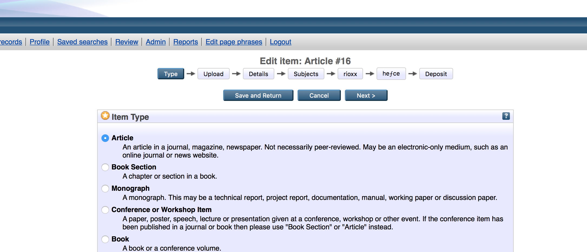
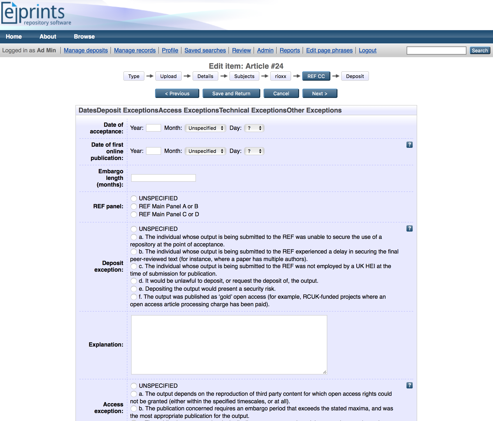
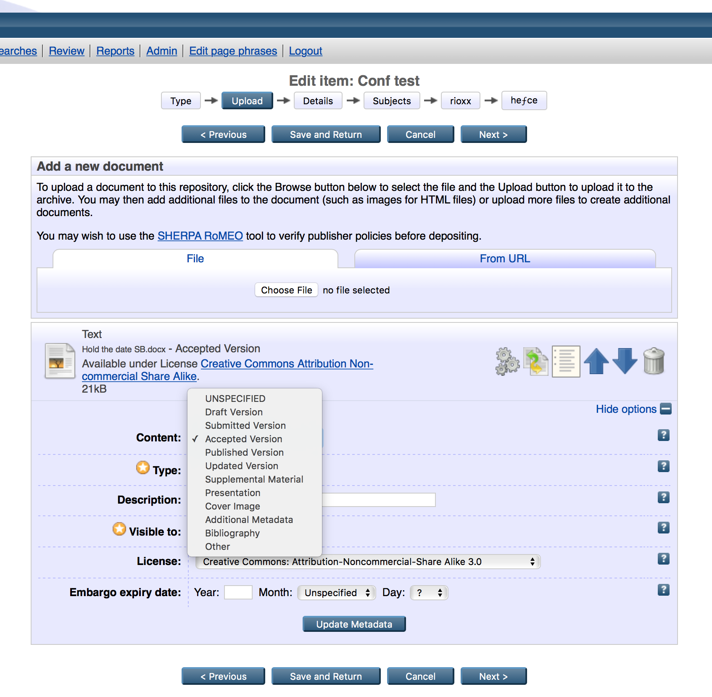
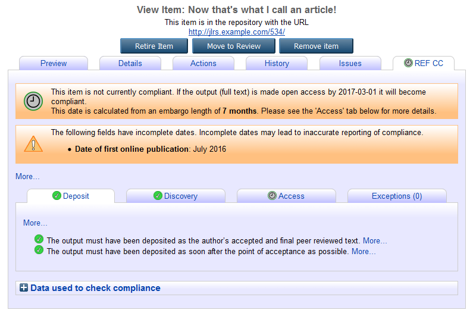
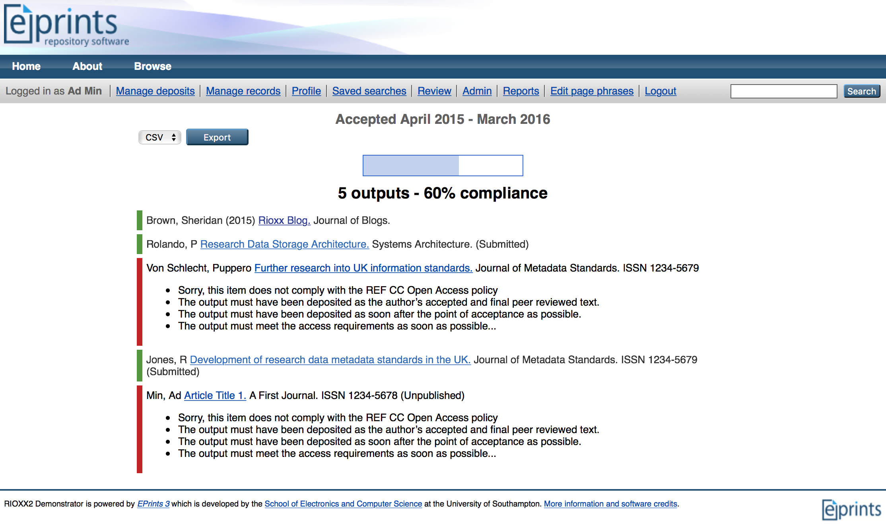

New in v1.1.0:
- integration with new version of 'datesdatesdates' that supports publication and online-publication dates
- display of a 'will become compliant' status for items that have an embargoed document attached, but that are otherwise compliant.
- automatic population of embargo-length (months) field based on embargo end date for AAM/VoRs
- warning for incomplete dates that may affect calculation of compliance
The policy states that, to be eligible for submission to the post-2014 REF, authors’ outputs must have been deposited in an institutional or subject repository. Deposited material should be discoverable, and free to read and download, for anyone with an internet connection. The requirement applies only to journal articles and conference proceedings with an International Standard Serial Number. It will not apply to monographs, book chapters, other long-form publications, working papers, creative or practice-based research outputs, or data.
The policy applies to research outputs accepted for publication after 1 April 2016. Institutions are being strongly encouraged to implement systems to enable them to meet this deadline as soon as possible.
The policy allows repositories to respect embargo periods set by publications. Where a publication specifies an embargo period, authors can comply with the policy by making a ‘closed’ deposit. Closed deposits must be discoverable to anyone with an Internet connection before the full text becomes available for read and download (which will occur after the embargo period has elapsed). If still under embargo at the submission date of the next REF, closed deposits will be admissible to the REF.
The output must have been deposited as soon after the point of acceptance as possible, and no later than three months after this date (as given in the acceptance letter or e-mail from the publication to the author).
There are a number of exceptions to the various requirements that will be allowed by the policy. These exceptions cover circumstances where deposit was not possible, or where open access to deposited material could not be achieved within the policy requirements. These exceptions will allow institutions to achieve near-total compliance, but the post-2014 REF will also include a mechanism for considering any other exceptional cases where an output could not otherwise meet the requirements.
The REF Compliance Checker plugin for EPrints provides a straightforward means by which you can check whether an article or conference proceeding in your EPrints repository is eligible for the post-2014 REF.
It does this by checking relevant metadata in your repository against the Open Access policy of the UK Higher Education Funding Bodies.
The developers of the plugin worked closely with HEFCE to ensure that it is fit for purpose. A beta version of the plugin has been tested by a number of UK universities prior to general release in early January 2016.
Jisc funded the development of the REF Compliance Checker plugin and it is freely available to all EPrints users. You may acquire the plugin from Github or the EPrints Bazaar.
The REF Compliance Checker plugin integrates with the RIOXX2 plugin for EPrints and the DatesDatesDates plugin. In addition, if you wish to benefit from the reports generated by the plugin, you will need to have installed the Generic Reporting Framework.
If your EPrints repository is hosted by a third party service provider, you may need to ask them to install the plugin for you since they may not permit the self-installation of plugins.
- The deposit, discovery and access requirements are met.
- There is a deposit exception.
- There is an access exception and the deposit and discovery requirements are met.
- There is a technical exception.
- There is an 'other' exception.
- The Date of first compliant deposit must be set (i.e. the item is a compliant deposit).
- The Date of first compliant deposit must be no later than three months after the Date of acceptance. If the Date of acceptance is before 1st April 2017, Date of first compliant deposit must be no later than three months after the Date of first online publication.
- The item must be in the Live Archive.
- If no embargo applies, the Date of first compliant Open Access must be less than one month after the Date of first compliant deposit. Otherwise, the Date of first compliant Open Access must be less than one month after the embargo expiry date (Date of first online publication + Embargo length (months).
- The Embargo length (months) must not exceed the stated maxima for the target REF panel.
Introduction
The REF Compliance Checker plugin for EPrints has been developed to help your institution comply with the Open Access policy of the UK HE Funding Bodies. The key points of the policy are shown below; the full details may be accessed from the HEFCE website: Policy for open access in the post-2014 Research Excellence Framework: Updated July 2015.
The REF Compliance Checker for EPrints
The purpose of the REF Compliance Checker is to smooth the process by which EPrints-using institutions can establish in a straightforward fashion whether an article or conference proceeding with an ISSN produced by a member of their organisation is eligible for the post-2014 REF. To do this effectively, the checker requires some metadata describing key facts such as the date of acceptance and the version type. The relevant metadata need to be checked against a set of logical rules that faithfully represent the requirements laid down in the Open Access policy of the UK Higher Education Funding Bodies.
In outline:
Metadata and terminology
Some new terminology has been developed to enable the plugin to perform its compliance tests effectively. These are listed below:
Date of first compliant deposit (FCD)
An item will be considered a compliant deposit if (a) it is in the Review or the Live Archive area of the repository and (b) it has the Accepted or Published version of the full text manuscript attached. The FCD metadata reflects the date that the item first met this criteria - for example when the item was submitted to the review section of the repository by the researcher, or when the accepted version of the full text was subsequently uploaded by an editor to the live side of the repository.
Once the Date of FCD is set, subsequent changes to the item will not affect it. The Date of FCD will be copied to any new versions created using the "New Version" option. The new version will effectively "inherit" the same Date of FCD as the previous version. The behaviour of the Date of FCD field in different circumstances is outlined in the table below.
| Action | Result |
|---|---|
| Researcher makes compliant deposit | Date of FCD set when researcher clicks "Deposit Now" |
| Researcher makes non-compliant deposit; editor subsequently uploads Accepted version of full text during review to make deposit compliant | Date of FCD set when editor uploads Accepted version |
| Compliant deposit in Live Archive - editor augments item by attaching the Published version | Date of FCD unchanged |
| Compliant deposit in Live Archive - editor replaces Accepted version of full text with Published version | Date of FCD unchanged |
| Compliant deposit in Live Archive - researcher selects "New Version" option, attaches the Published version of the full text to the new version and deposits it | Date of FCD copied to new version |
Version of first compliant deposit (FCD)
The Version of FCD automatically records the version of the full text that was present when the Date of FCD was recorded.
| Version(s) present | Version of FCD |
|---|---|
| Accepted only | AM |
| Published only | VoR |
| Accepted and published | VoR |
These version terms are adopted from the RIOXX V2 Application Profile.
Once the Version of FCD is set, subsequent changes to the item will not affect it. The Version of FCD will be copied to any new versions created using the "New Version" option - the new version will effectively "inherit" the same Version of FCD as the previous version.
Date of first compliant Open Access (FOA)
The Date of FOA automatically records the date that a compliant deposit was first made Open Access - that is, the date that the Accepted or Published version of the full text attached to the deposit was first made publicly available. For example this could be the date that the item was made live (discoverable) or when an embargo period expired.
Once the Date of FOA is set, subsequent changes to the item will not affect it. The Date of FOA will be copied to any new versions created using the "New Version" option - the new version will effectively "inherit" the same Date of FOA as the previous version.
Date of acceptance
The date that the item was first accepted for publication.
Date of first online publication
The date that the item was first published online
Embargo length
The length (in months) of any embargo affecting access to the Accepted or Published version. Note that the Open Access policy stipulates acceptable embargo lengths.
Target REF panel
The panel that the item is likely to be submitted to in the post-2014 Research Excellence Framework.
Exceptions
Any deposit, access, technical or other exceptions that apply to the item.
How the OA Compliance Checker works
Using the metadata described above, the OA Compliance Checker plugin carries out a number of tests to determine compliance. These tests are carried out whenever the item is changed, so the updated compliance status is immediately reflected.
Overall compliance
To be compliant, an item must meet at least one of the following conditions:
Deposit requirements
To be deposit compliant, all of the following conditions must be met.
Discovery requirements
To be discovery compliant, all of the following conditions must be met:
Access requirements
To be access compliant, all of the following conditions must be met.
Other criteria
All other criteria are determined to be already met or not necessary to explicitly check at the software level.
Using the REF Compliance Checker plugin
The test (beta) version of the REF Compliance Checker was designed to be self-contained and should not, therefore, affect the operation of your existing repository. The current version integrates with the DatesDatesDates and RIOXX2 plugins. At a later point in time there will be further integration between the REF Compliance Checker and the established REF plugin, but further details are required from the Funding Bodies before that can be done.
The REF Compliance Checker is able to produce reports showing by year which items are eligible for the REF. In order to enable this feature, the Generic Reporting Framework will need to be installed from the Bazaar (Generic Reporting Framework version 1.0.0+). This same package is also required for the RIOXX2 plugin.
Installation
The REF Compliance Checker plugin is available via the EPrints Bazaar. This is accessed from the “System Tools” tab on the Admin screen. A Bazaar package is normally installed by clicking the “Install” button next to a package displayed on the “Available” tab.
Changes to the workflow
Once installed, a REF CC tab will appear in the workflow.

Selecting the REF CC tab will open the user interface to the plugin.

Working with the REF Compliance Checker plugin
It is important when depositing an item that the content is correctly specified: the drop down list associated with the Content field, found in the optional section of the Upload stage of the workflow, enables the depositor to identify an item as being Accepted or Published. The REF Compliance Checker plugin refers to this information to help establish whether an item is eligible for the REF. In view of that, the repository administrator may choose to consider whether the Content field should become mandatory.

The metadata entry process for the Details and Subject sections of the workflow will be very familiar to EPrints users and the Compliance Checker plugin changes nothing here. Similarly, the RIOXX2 metadata collection page is standard and is being used by an increasing number of institutions that use EPrints.
The depositor may select a REF panel if appropriate; this is important because the maximum allowable embargo period differs according to the REF panel selected.
The one-screen user interface to the REF CC plugin is designed to collect metadata that cannot be entered elsewhere in the workflow process and provides an additional opportunity to enter key metadata if it has not been entered elsewhere – such as the date of acceptance. In particular, depositors can specify the REF panel relevant to the item being deposited and exceptions may be claimed. If depositors select one of the radio buttons in error, selecting the “Unspecified” radio button will override the erroneous selection.

Once a record has been deposited, the REF Compliance Checker plugin will then perform its logic-based tests on the metadata that has been supplied. The next screen provides an example of a record that is compliant with the Open Access policy. The plugin clearly indicates which data have been used to check compliance with the various different aspects of the policy: deposit; discovery; access or whether any exceptions have been claimed.

Where a record is ineligible this will be clearly indicated. The plugin will indicate where the deficiency lies. Clicking the “More” link provides more detailed information about the particular requirements of the Open Access policy. In some cases it may be, for instance, that a key date is missing, the embargo length exceeds the maximum allowed under the policy or the status of the item has not been established.
In the case depicted by the screen shot below, the deposited does not comply with the Open Access policy because it does not fully comply with the deposit rules. Clicking the “More” link provides a detailed account of what the rules are with regard to achieving compliance and by expanding the area under the heading “Data used to check compliance” it is clear that the Date of acceptance is missing.

Sometimes an output meets all the compliance criteria except that the full text is not OA, as an embargo has been placed on it. The screen shot below shows the 'clock' icon used to denote an item that will become compliante when the embargo is released.
In this case, there is also an incomplete date (only year and month were specified) which generates a warning, as accurate compliance calculations need accurate dates to work from.

Reporting
The plugin offers two reporting options that provide an at-a-glance overview of the level of compliance in any one year. The first report category shows the compliance status of all relevant items (articles and conference proceedings) in a particular 12-month period. The second report category focuses on those items where one or more exceptions have been claimed.
In the example shown below, two of the five items in our test repository do not comply with the Open Access policy, resulting in a compliance score of 60% (3/5). Information is provided as to why the non-compliant records failed the tests.

Support
For the first six months of 2016, Jisc-sponsored general and technical support will be available to HEIs that wish to make use of the REF CC plugin. The Repository technical support site maintained by Jisc will signpost you to appropriate sources of support. If your repository is hosted by a service such as EPrints Services or ULCC you may wish to enlist their assistance in installing the plugin (and the other relevant plugins if you do not already have them installed: RIOXX2, DatesDatesDates and the Generic Reporting Framework.